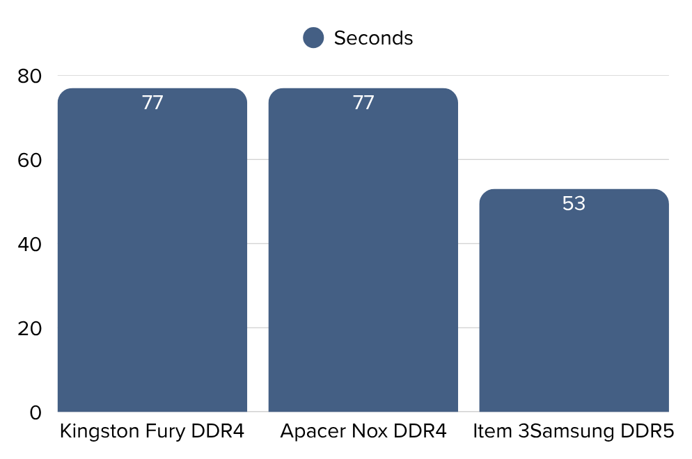

When it comes to building a computer, the RAM is one of the most considered components. Most people know that the higher the RAM generally means better multitasking performance; does the RAM type and brand matter in this case?
To explore this, we tested the load up time for games, using 3 PC's, with 16GB of RAM installed in all of them.
We used three computers with the following RAM specifications.
Our main focus was the load-up time - how fast each computer could load up a video game; in this case Fortnite
Here's what we observed:
The computer equipped with DDR5 RAM had a much faster load up time compared to the two systems using DDR4 RAM - even though all three had the same capacity of 16 GB.
The brand of DDR4 RAM made no difference: both DDR4 systems performed exactly the same. However, the generation of RAM did make a clear impact in the results.
This tells us two things:
Here's a comparison of the load up times in a graph:
